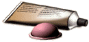
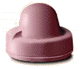

Birth Control Problem Set
Problem 5: Diaphragms and Cervical Caps
Tutorial to help answer this questionDiaphragms and cervical caps need to be inserted before intercourse and may be removed immediately after intercourse.
A. True B. False
| Both devices need to be inserted before intercourse along with spermicide and need to stay in for at least 8 hours after intercourse, but must be removed within 24 hours to avoid toxic reaction. The 8 hour delay is to give time for all sperm in the vagina to die before removing the diaphragm or the cervical cap. |
Diaphragm
|  | A diaphragm is a dome shaped rubber device with a spring rim. It is inserted into the vagina to cover the area around the cervix. It must be used with spermicidal cream or jelly. The spermicide kills any sperm that may get by. |
|
The diaphragm requires a prescription and must be fitted by a clinician. It will also need to be refitted after pregnancy or weight change. One might also need practice to insert it. It needs to be inspected periodically for holes and it cannot be used during menstrual periods. Failure rateThe diaphragm used with spermicidal cream or jelly has a failure rate of 6% to 18% (effective at a rate of 82% to 94%) against unwanted pregnancy, but offers only minimal STD protection. |
|
|  | A cervical cap is a cap shaped rubber device that is used with spermicide. It is inserted into the vagina and forms a barrier over the cervix. Suction develops to help keep it on the cervix. The Cap needs to be put in at least 30 minutes before intercourse and needs to stay in at least 8 hours after intercourse. |
|
A prescription is required for the cervical cap and it must be fitted by a clinician. One must have normal pap smear results before a fitting appointment can be made. Practice is needed to insert and remove it. Failure rateThe cervical cap used with spermicide is more effective against unplanned pregnancies for women who have not had a child. It has a failure rate of 9% to 18% (effective rate of 82% to 91%) for women who have never had a child versus 26% to 36% (effective 64% to 74%) for women who have had a child. It offers only minimal STD protection. |
|


University of Arizona
Tuesday, February 10, 1998
Contact the Development Team
http://biology.arizona.edu
All contents copyright © 1998. All rights reserved.